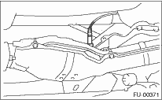
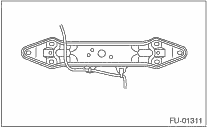
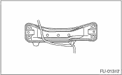
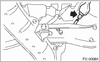
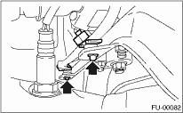

1. Before installing rear oxygen (A/F) sensor, apply the anti-seize compound only to the threaded portion of rear oxygen (A/F) sensor. This facilitates the next removal.
Anti-seize compound:
NEVER-SEEZ NSN, JET LUBE SS-30 or equivalent
CAUTION:
Never apply anti-seize compound to the protector of rear oxygen sensor.
2. Install the rear oxygen sensor.
Tightening torque:
21 N·m (2.1 kgf-m, 15.2 ft-lb)

• AT model

• MT model

3. Connect the connector to rear oxygen sensor.

4. Connect the clip to the crossmember.

5. Lower the vehicle.
6. Connect the battery ground cable to the battery.